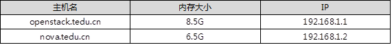

本案例要求把三个镜像配置yum源：
实现此案例需要按照如下步骤进行。
步骤一：配置 yum仓库
警告：仅yum配置的第一个源（系统源）为gpgcheck=1需要导入公钥，其他的都是gpgcheck=0，否则安装会报错。
[root@room9pc01 ~]# mkdir /var/ftp/system [root@room9pc01 ~]# mkdir /var/ftp/extras [root@room9pc01 ~]# mkdir /var/ftp/HEL7OSP [root@room9pc01 ~]# vim /etc/fstab /iso/RHEL7OSP-10.iso /var/ftp/HEL7OSP iso9660 defaults 0 0 /iso/CentOS7-1708.iso /var/ftp/system iso9660 defaults 0 0 /iso/RHEL7-extras.iso /var/ftp/extras iso9660 defaults 0 0 [root@room9pc01 ~]# mount –a mount: /dev/loop0 is write-protected, mounting read-only mount: /dev/loop1 is write-protected, mounting read-only mount: /dev/loop2 is write-protected, mounting read-only [root@room9pc01 ~]# vim /etc/yum.repos.d/local.repo [local_repo] name=CentOS-$releasever - Base baseurl="ftp://192.168.1.254/system" enabled=1 gpgcheck=1 [local_extras] name=extras baseurl="ftp://192.168.1.254/extras" enabled=1 gpgcheck=0 [1local_devtools-rpms] name=devtools-rpms baseurl="ftp://192.168.1.254/HEL7OSP/rhel-7-server-openstack-10-devtools-rpms" enabled=1 gpgcheck=0 [2local_optools-rpms] name=optools-rpms baseurl="ftp://192.168.1.254/HEL7OSP/rhel-7-server-openstack-10-optools-rpms" enabled=1 gpgcheck=0 [3local_rpms] name=rpms baseurl="ftp://192.168.1.254/HEL7OSP/rhel-7-server-openstack-10-rpms" enabled=1 gpgcheck=0 [4local_tools-rpms] name=tools-rpms baseurl="ftp://192.168.1.254/HEL7OSP/rhel-7-server-openstack-10-tools-rpms" enabled=1 gpgcheck=0 [5local_mon-rpms] name=mon-rpms baseurl="ftp://192.168.1.254/HEL7OSP/rhel-7-server-rhceph-2-mon-rpms" enabled=1 gpgcheck=0 [6local_osd-rpms] name=osd-rpms baseurl="ftp://192.168.1.254/HEL7OSP/rhel-7-server-rhceph-2-osd-rpms" enabled=1 gpgcheck=0 [7local_rhceph-2-tools-rpms] name=rhceph-2-tools-rpms baseurl="ftp://192.168.1.254/HEL7OSP/rhel-7-server-rhceph-2-tools-rpms" enabled=1 gpgcheck=0 [8local_agent-rpms] name=agent-rpms baseurl="ftp://192.168.1.254/HEL7OSP/rhel-7-server-rhscon-2-agent-rpms" enabled=1 gpgcheck=0 [9local_installer-rpms] name=installer-rpms baseurl="ftp://192.168.1.254/HEL7OSP/rhel-7-server-rhscon-2-installer-rpms" enabled=1 gpgcheck=0 [10local_rhscon-2-main-rpms] name=rhscon-2-main-rpms baseurl="ftp://192.168.1.254/HEL7OSP/rhel-7-server-rhscon-2-main-rpms" enabled=1 gpgcheck=0
本案例要求掌握DNS服务器的配置：
此实验的整体方案需要三台机器，openstack作为主节点，nova作为额外节点，真机做为DNS和NTP的服务器(这里不再在表-1中体现，在真机上面直接配置即可)，提供域名解析和时间同步服务，具体情况如表-1所示：
表-1
实现此案例需要按照如下步骤进行。
步骤一：配置DNS（真机操作）
[root@room9pc01 ~]# yum -y install bind bind-chroot
[root@room9pc01 ~]# vim /etc/named.conf
options {
listen-on port 53 { 192.168.1.3; }; //修改ip
allow-query { any; }; //允许所有
recursion yes;
forwarders { 172.40.1.10; }; //转发dns,真机的服务器地址
dnssec-enable no;
dnssec-validation no;
};
[root@room9pc01 ~]# systemctl restart named
步骤二：两台虚拟机配置静态ip
注意：两台主机同样操作，改一下ip即可（以openstack.tedu.cn为例）
[root@localhost ~]# echo openstack.tedu.cn > /etc/hostname [root@localhost ~]# hostname openstack.tedu.cn //另外一台主机改名为nova.tedu.cn [root@openstack ~]# vim /etc/sysconfig/network-scripts/ifcfg-eth0 # Generated by dracut initrd DEVICE="eth0" ONBOOT="yes" IPV6INIT="no" IPV4_FAILURE_FATAL="no" NM_CONTROLLED="no" TYPE="Ethernet" BOOTPROTO="static" IPADDR="192.168.1.1" PREFIX=24 GATEWAY=192.168.1.254 [root@openstack ~]# systemctl restart network
步骤三：域名解析
[root@openstack ~]# vim /etc/hosts //在openstack.tedu.cn和nova.tedu.cn主机上面操作 192.168.1.1 openstack.tedu.cn 192.168.1.2 nova.tedu.cn
测试能否ping通，如图-1所示：
图-1
本案例要求配置NTP时间同步服务器：
实现此案例需要按照如下步骤进行。
步骤一：配置NTP时间同步（真机操作）
[root@room9pc01 ~]# yum -y install chrony [root@room9pc01 ~]# vim /etc/chrony.conf server ntp1.aliyun.com iburst bindacqaddress 0.0.0.0 allow 0/0 //允许所有人使用我的时间服务器 cmdallow 127.0.0.1 //控制指令 [root@room9pc01 ~]# systemctl restart chronyd [root@room9pc01 ~]# netstat -antup | grep chronyd udp 0 0 0.0.0.0:123 0.0.0.0:* 23036/chronyd udp 0 0 127.0.0.1:323 0.0.0.0:* 23036/chronyd [root@room9pc01 ~]# chronyc sources -v //出现*号代表NTP时间可用 ^* 120.25.115.20 2 6 17 62 -753us[-7003us] +/- 24ms
本案例要求准备基础环境，为安装openstack做准备：
实现此案例需要按照如下步骤进行。
步骤一：准备基础环境
1）配置yum源
备注：只有系统源的gpgcheck=1，其他的都是gpgcheck=0）
[root@room9pc01 ~]# scp /etc/yum.repos.d/local.repo \ 192.168.1.1:/etc/yum.repos.d/ //拷贝给openstack.tedu.cn这台主机 [root@room9pc01 ~]# scp /etc/yum.repos.d/local.repo \ 192.168.1.2:/etc/yum.repos.d/ //拷贝给nova.tedu.cn这台主机
步骤二：配置ip
备注： 配置eth0为公共网络，网络地址192.168.1.0/24（已经配置过）
配置eth1为隧道接口，网络地址192.168.2.0/24
1）给openstack.tedu.cn主机添加eth1网卡
[root@room9pc01 networks]# virsh -c qemu:///system attach-interface openstack bridge private2 --model virtio Interface attached successfully //添加成功 [root@openstack ~]# cd /etc/sysconfig/network-scripts [root@openstack network-scripts]# cp ifcfg-eth0 ifcfg-eth1 [root@openstack network-scripts]# vim ifcfg-eth1 # Generated by dracut initrd DEVICE="eth1" ONBOOT="yes" IPV6INIT="no" IPV4_FAILURE_FATAL="no" NM_CONTROLLED="no" TYPE="Ethernet" BOOTPROTO="static" IPADDR="192.168.2.1" PREFIX=24 GATEWAY=192.168.1.254 [root@openstack network-scripts]# systemctl restart network
2）给nova.tedu.cn主机添加eth1网卡
[root@room9pc01 networks]# virsh -c qemu:///system attach-interface nova bridge private2 --model virtio Interface attached successfully //添加成功 [root@nova ~]# cd /etc/sysconfig/network-scripts [root@nova network-scripts]# cp ifcfg-eth0 ifcfg-eth1 [root@nova network-scripts]# vim ifcfg-eth1 # Generated by dracut initrd DEVICE="eth1" ONBOOT="yes" IPV6INIT="no" IPV4_FAILURE_FATAL="no" NM_CONTROLLED="no" TYPE="Ethernet" BOOTPROTO="static" IPADDR="192.168.2.2" PREFIX=24 GATEWAY=192.168.1.254 [root@openstack network-scripts]# systemctl restart network
3）配置卷组（openstack主机上面操作）
[root@room9pc01 images]# qemu-img create -f qcow2 disk.img 50G Formatting 'disk.img', fmt=qcow2 size=53687091200 encryption=off cluster_size=65536 lazy_refcounts=off [root@room9pc01 networks]# virsh -c qemu:///system attach-disk openstack \ /var/lib/libvirt/images/disk.img vdb --subdriver qcow2 --sourcetype file Disk attached successfully //添加成功 [root@openstack ~]# yum install lvm2 [root@openstack ~]# pvcreate /dev/vdb [root@openstack ~]# vgcreate cinder-volumes /dev/vdb
4）安装openstack的依赖包（openstack.tedu.cn和nova.tedu.cn主机上面
[root@openstack ~]# yum install -y qemu-kvm libvirt-client libvirt-daemon libvirt-daemon-driver-qemu python-setuptools [root@nova ~]# yum install -y qemu-kvm libvirt-client libvirt-daemon libvirt-daemon-driver-qemu python-setuptools
本案例要求通过packstack完成以下配置：
实现此案例需要按照如下步骤进行。
步骤一：安装packstack
[root@openstack ~]# yum install -y openstack-packstack [root@openstack ~]# packstack --gen-answer-file answer.ini //answer.ini与answer.txt是一样的，只是用vim打开answer.ini文件有颜色 Packstack changed given value to required value /root/.ssh/id_rsa.pub [root@openstack ~]# vim answer.ini 11 CONFIG_DEFAULT_PASSWORD=redhat //密码 42 CONFIG_SWIFT_INSTALL=n 75 CONFIG_NTP_SERVERS=192.168.1.3 //时间服务器的地址 554 CONFIG_CINDER_VOLUMES_CREATE=n //创建卷,已经手动创建过了 840 CONFIG_NEUTRON_ML2_TYPE_DRIVERS=flat,vxlan //驱动类型 876 CONFIG_NEUTRON_ML2_VXLAN_GROUP=239.1.1.5 //设置组播地址,最后一个随意不能为0和255,其他固定 910 CONFIG_NEUTRON_OVS_BRIDGE_MAPPINGS=physnet1:br-ex //物理网桥的名称 921 CONFIG_NEUTRON_OVS_BRIDGE_IFACES=br-ex:eth0 //br-ex桥的名称与eth0连接，管理eth0,网桥与哪个物理网卡连接 936 CONFIG_NEUTRON_OVS_TUNNEL_IF=eth1 1179 CONFIG_PROVISION_DEMO=n //DEMO是否测试 [root@openstack ~]# packstack --answer-file=answer.ini **** Installation completed successfully ****** //出现这个为成功
步骤二：安装openstack可能会出现的错误以及排错方法
1）ntp时间不同步，如图-2所示：
图-2
解决办法：查看ntp时间服务器，是否出现*号，若没有，查看配置文件，配置ntp服务器步骤在案例3，可以参考
[root@room9pc01 ~]# chronyc sources -v //出现*号代表NTP时间可用 ^* 120.25.115.20 2 6 17 62 -753us[-7003us] +/- 24ms [root@openstack ~]# chronyc sources -v ^* 192.168.1.3 3 9 377 504 +50us[ -20us] +/- 24ms [root@nova ~]# chronyc sources -v ^* 192.168.1.3 3 9 377 159 -202us[ -226us] +/- 24ms
2）网桥名称写错，如图-3所示：
图-3
解决办法：检查配置文件
[root@openstack ~]# vim answer.ini ... 921 CONFIG_NEUTRON_OVS_BRIDGE_IFACES=br-ex:eth0 //br-ex桥的名称与eth0连接，管理eth0,网桥与哪个物理网卡连接 ...
3）若/root/.ssh/id_rsa.pub，提示password，同样是配置文件没有写对，如图-4所示：
图-4
4）yum源没有配置正确，如图-5所示：
图-5
解决办法：检查yum是否为10731个软件包，查看是否是yum源没有配置正确，之后安装oprnstack-dashboard
备注：除了系统源gpgcheck=1之外，其他都是gpgcheck=0
5）出现Cannot allocate memory,如图-6所示：
图-6
解决办法：
内存不足，重新启动主机
本案例要求运用OVS完成以下配置：
实现此案例需要按照如下步骤进行。
步骤一：查看外部OVS网桥
1）查看br-ex网桥配置（br-ex为OVS网桥设备）
[root@openstack ~]# cat /etc/sysconfig/network-scripts/ifcfg-br-ex ONBOOT="yes" NM_CONTROLLED="no" IPADDR="192.168.1.1" PREFIX=24 GATEWAY=192.168.1.254 DEVICE=br-ex NAME=br-ex DEVICETYPE=ovs OVSBOOTPROTO="static" TYPE=OVSBridge
2）查看eth0网卡配置（该网卡为OVS网桥的接口）
[root@nova ~]# cat /etc/sysconfig/network-scripts/ifcfg-eth0 DEVICE=eth0 NAME=eth0 DEVICETYPE=ovs TYPE=OVSPort OVS_BRIDGE=br-ex ONBOOT=yes BOOTPROTO=none
3）验证OVS配置
[root@nova ~]# ovs-vsctl show
Bridge br-ex
Controller "tcp:127.0.0.1:6633"
is_connected: true
fail_mode: secure
Port br-ex
Interface br-ex
type: internal
Port phy-br-ex
Interface phy-br-ex
type: patch
options: {peer=int-br-ex}
Port "eth0"
Interface "eth0"
ovs_version: "2.5.0"
本案例要求通过Horizon完成以下操作：
实现此案例需要按照如下步骤进行。
步骤一：浏览器访问openstack
1）浏览器访问
[root@openstack conf.d]# firefox 192.168.1.1 //访问失败
2）需要改配置文件并重新加载
[root@openstack ~]# cd /etc/httpd/conf.d/
[root@openstack conf.d]# vi 15-horizon_vhost.conf
35 WSGIProcessGroup apache
36 WSGIApplicationGroup %{GLOBAL} //添加这一行
[root@openstack conf.d]# apachectl graceful //重新载入配置文件
3）浏览器访问，出现页面，如图-6所示：
图-6
3）查看默认用户名和密码
[root@openstack conf.d]# cd
[root@openstack ~]# ls
answer.ini keystonerc_admin //keystonerc_admin生成的文件，里面有用户名和密码
[root@openstack ~]# cat keystonerc_admin
unset OS_SERVICE_TOKEN
export OS_USERNAME=admin //用户名
export OS_PASSWORD=1bb4c987345c45ba //密码
export OS_AUTH_URL=http://192.168.1.1:5000/v2.0
export PS1='[\u@\h \W(keystone_admin)]\$ '
export OS_TENANT_NAME=admin
export OS_REGION_NAME=RegionOne
4）在火狐浏览器中输入用户名和密码，登录后页面如图-7所示：
图-7
4）创建名为myproject的项目
[root@openstack ~]# source ~/keystonerc_admin //初始化环境变量 [root@openstack ~(keystone_admin)]# openstack project create myproject +-------------+----------------------------------+ | Field | Value | +-------------+----------------------------------+ | description | None | | enabled | True | | id |f73949e2701346328faf5c1272414cd0| | name | myproject | +-------------+----------------------------------+
5）查看项目信息
[root@openstack ~(keystone_admin)]# openstack project list +----------------------------------+-----------+ | ID | Name | +----------------------------------+-----------+ | 3fd5bffd734543d39cf742492273a47f | services | | 7f0b43274a9f4e149357fc8393ff2c68 | admin | | f73949e2701346328faf5c1272414cd0 | myproject | +----------------------------------+-----------+
6）更新vcpu配额为30
[root@openstack ~(keystone_admin)]# nova quota-update --cores 30 myproject
7）删除myproject
[root@openstack ~(keystone_admin)]# openstack project delete myproject